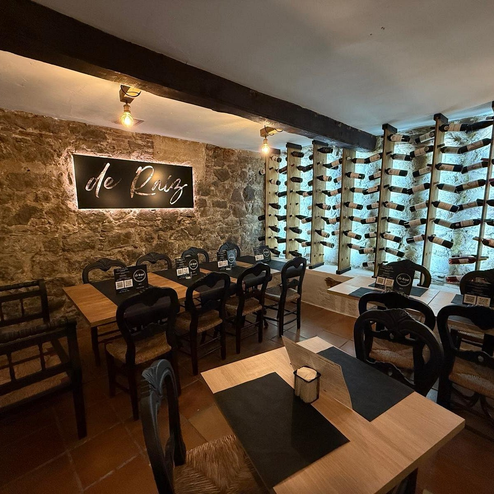

Bienvenidos a RAÍZ & BRASA
RAÍZ & BRASA es un restaurante inspirado en los sabores, productos y tradiciones de la cocina argentina. Nuestra propuesta busca combinar recetas conocidas de nuestra gastronomía con una presentación actual y una identidad propia.
El fuego y la parrilla son protagonistas de nuestra cocina, acompañados por carnes, pescados, vegetales y productos regionales. Trabajamos con preparaciones pensadas para conservar los sabores característicos de cada ingrediente.
Nuestro menú reúne diferentes opciones para comenzar, disfrutar de un plato principal, elegir una guarnición, acompañar la comida con una bebida y finalizar con un postre.
